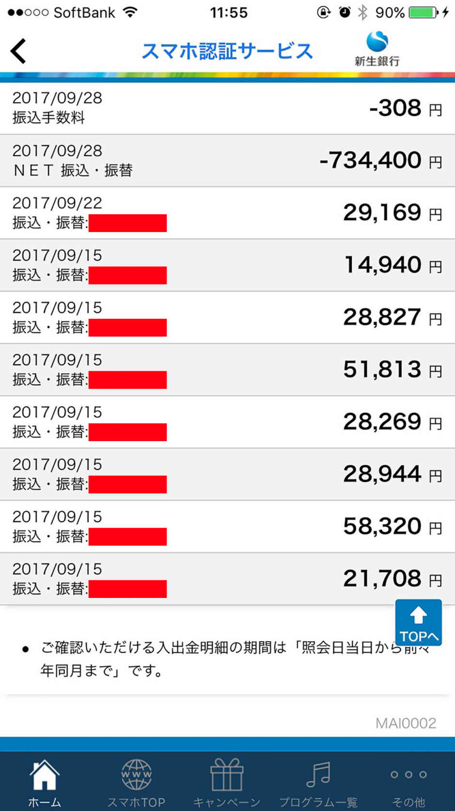
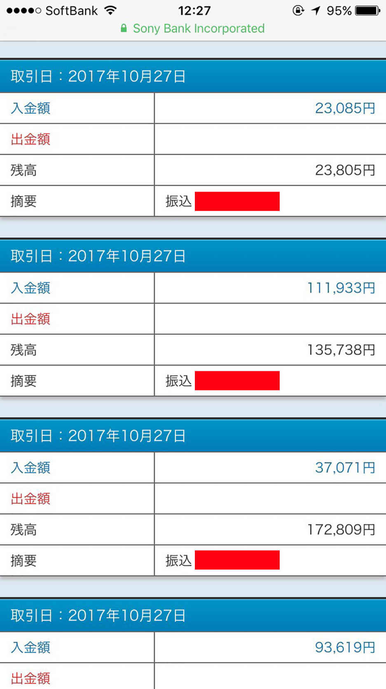

| ２０１８年の初心者が最も稼ぎやすい副業 〜理想の生活を手に入れるネット物販入門〜 | |
| 宮下大和 | |
| Hitotsuku Publication (2018) | |
宮下大和
好きなことで生きていきたい......誰もが心の中でそう思っているのではないでしょうか。特に現在サラリーマンをやっている方に、そういう方が多いはずです。
「本当にやりたいのはこんなことじゃないんだ。脱サラしたい！」
「今の稼ぎじゃやりたいことができない。副業で安定した収入を得たい！」
このような夢を持っている方を、僕は心から応援したいと思っています。
僕、宮下大和は山梨出身の現在30
歳です。もともとは自営業として整体師をやっていたのですが、オーナーさんに雇われながらだったので、半分は会社員のようなものでした。そのときの給料はだいたい25
万円ぐらいで、生活する上では問題はなかったんですが、子供と奥さんもいるので不安を感じていました。
何か整体師以外のことをやらないとなあ......そう考え、最初はネットワークビジネスをやったのですが、１年で50
万円くらい使ってしまったり、上手くいきませんでした。しかしその後もネットビジネスのことをいろいろ調べ、失敗を重ねながら、ついに出会ったのが「無在庫転売」という手法でした。
僕はこの無在庫転売で初月に10
万円稼ぐことができました。無在庫転売は誰でも簡単に稼げるという、他に例を見ないほどの特徴を持つビジネスだったのです。
そこから成功した僕はついに脱サラし、昨年に起業しました。株式会社 Laugh という会社なんですが、コミュニティ運営をしたり、無在庫転売を人に教えるという教育事業をさせていただいたり、複数の事業を行っています。おかげさまで年収は２、３０００万円、会社員時代の10
倍ほどにもなっています。
僕はまさに、好きなことで自由に生きていけるようになりました。そこで今回、そのノウハウを多くの人に伝えるべく、ネット物販をテーマに電子書籍を刊行することになりました。
そのノウハウを語るのは僕だけではありません。僕の教え子である橋本武志さんと中谷一之さんにもご協力いただきました。２人もいろいろな苦労をしてきましたが、今では僕と同じくネット物販で成功し、好きなことで自由に生きています。
ネット物販で実際に成功した人たちは、どんな風にやっているのか？ そのことをはっきりイメージできる内容になったと思っています。
僕たち３人と同じく幸せを掴めるように、この本があなたの人生を変える一助になれば幸いです。
【宮下】ではまず、橋本さんの自己紹介からお願いしましょう。
【橋本】こんにちは、橋本武志です。僕は今46
歳で、ちょうど10
年前に起業をして、３年前に法人化しました。業務内容は店舗設計とかデザインとか、アパレルの物販に関わる仕事をずっとやってきました。
それが順調ではあったんですけど、去年の秋ごろに取引先が急に倒産したことがきっかけで、８００万円という大きな負債を負うことになってしまいました。順調だった経営も一気に傾き、資金繰りができなくなり、もう倒産するしかないというところまで追い込まれました。
しかしそんな中で、大和さんと出会いました。大和さんが提案したものこそが無在庫転売でした。これだったら資金がなくてもできるよと。そして取り組んでみたら、初月に12
万円を稼ぐことができました。
大和さんが言ったことは本当だったと感触を得ました。それから倍々ペースで利益が上がるようになり、４ヶ月後には80
万円の利益を上げることができて、何とか会社を倒産させずに済みました。
【宮下】懐かしいですねえ。
【橋本】そうですね。だいぶ前の話に感じますけど、１年経ってないんですよね。
【宮下】橋本さんは物販のプロとしてもう20
年ぐらい携わっているわけですが、ずっと携わっているからこそ分かるネット物販の良さを教えていただけますか？
【橋本】僕はリアルでの、実店舗の物販をずっとやってきましたけど、これは「有在庫」、つまり在庫を仕入れて店頭に並べて、お客さんに見てもらって買ってもらうというやり方です。これがまあ普通の商売ですよね。
これは仕入れた商品に対し、先にお金を払わなければならないというリスクがあります。そもそも商品を並べる場所、お店を構える必要があります。お店を建てる土地、建物、そこを管理するスタッフ......あらゆる面でコストがかかってしまいます。
何が言いたいかというと、資本が大きくなければできないということです。ランニングコストも非常に大きいので、ある程度の資本力、体力がないとできない。
一方でネットは、まず土地という概念がありませんよね。無限の空間の中にお店を出せます。先ほどからキーワードとして出ている無在庫転売については、のちほど詳しい説明をしますが、これは無限の在庫の中から自分の売りたい物を選べるんですね。それを土地という概念のないところに並べることができる。またスタッフも、お客さんが何人も来る店なら５人10
人と必要になりますけど、ネットは窓口がひとつで、たくさんのお客さん、それこそ１００万人のお客さんにもいっぺんに見てもらえます。非常に効率がいいやり方なんですね。
一言でいうと「まったく資本のない人が大資本と同じ土俵に立てる、唯一のビジネスモデルである」ということです。我々みたいなサラリーマンだったり小さな経営者だったりが隙間を突ける、そんなビジネスはこれくらいしかないんじゃないかなと思います。
そして人は生きているかぎり、物を買って生活します。このビジネスモデルは決してなくなりません。ネット社会はますます大きくなっていて、それに伴い市場規模も大きくなっています。これが飽和するっていうことは、ちょっと考えづらいですね。
【橋本】ネットビジネスは今から始めても遅くありません。むしろ今こそ始めるべきだと思います。10
年後になると、またネットの浸透度が変わってくると思うんですよ。10
年後にはじめるのでは遅いかもしれませんけど、今始めるなら、まだまだ先行者利益が得られるビジネスじゃないのかなと。
ところで今、ネットビジネスは怖いとか危ないって言う人が少なくないんですけど、それはつまりネットビジネスのことを知らない人がまだまだいるってことだと思うんですよ。これが当たり前になってくれば、誰も怖いとか言わないわけです。
たとえば今の世の中スマホを持っているのは当たり前なんですけど、10
年前20
年前だったら「何それ？」ですよ。
【宮下】そうですよね。
【橋本】でも今は当たり前ですよね。クレジットカードで買うっていうのも、僕の世代だとまだカード持ってないとか、怖いとか言う人がいるんですけど（笑）。もっと上の世代だと、もっとそういう傾向があると思います。でも今の若い人、20
代30
代の人とかはクレジットカードで買うのはあまり抵抗はないはずです。
そういうことだと思うんですよ。ネットビジネスは今の世の中では、まだ半信半疑。半分くらいの人は知っているけど、もう半分の人は知らないみたいな。だから今始めたら、とっても稼ぎやすい。
しかも無在庫転売みたいなやり方でスタートを切れば、自分がリスクを負うこともあまりないわけです。だから本当にいい時期なんじゃないかなって思いますね。僕らはいいタイミングで出会ったなと。
リアルじゃなくて、ネットでビジネスをはじめるべきなんです。ネットでやるんだったら物販がよくて、物販をやるんだったらスタートは無在庫転売がいいと思います。
【宮下】１個１個の要素が絡み合って、最強になってる感じですよね。
【橋本】そうですね。弱者にはこれだ！ っていうビジネスかなと思いますね。
【宮下】最初って本当に、めっちゃ大事なんですよ。稼ぎやすいビジネスモデルから自信つけてもらうのがいいと思うんです。僕も整体師やってましたけど、店舗を作るとしたら１００万円くらいかかるじゃないですか。
【橋本】安くてもね。
【宮下】安くても１００万円。それがいらない状態でスタートできるっていうのがデカいです。で、ネットでお客さんが集まっているところに商品をポンと出せる。あとは勝手に売れるじゃないですか（笑）。だから無在庫のネット物販は、今熱いビジネスですよ。これから副業をやりたい人がたくさん出てくると思いますけど、今このタイミングでやっていただくと、橋本さんがおっしゃったようにチャンスがたくさんあります。
今はみんな、ネットで買い物しますからね。ネット物販が始まった頃なんて、みんな怖いって言って買わなかったですからね。
【橋本】カードの番号打たなきゃいけないんでしょとか（笑）。
【宮下】でも今はネットで買うのは当たり前じゃないですか。同じようにネットでビジネスするのは当たり前の時代になってきてるんです。だからこれからご紹介するノウハウを、どんどん取り入れていただきたいですね。
【橋本】僕は無在庫転売をはじめて４ヶ月で80
万円利益を上げたと言いましたけど、副業の片手間でやってもそこまでの利益が出たんですね。それがきっかけで今、大和さんとリアルのビジネスパートナーになり、コミュニティの運営にも関わらせてもらったりしています。今はもうとても仕事が楽しいですよ。本当に無在庫転売のおかげかなと（笑）。
【宮下】では、いよいよ無在庫転売について説明していこうと思います。しかし多くの人が、最初に抱く疑問があると思います。それは「無在庫ってどういうことなの？」ということですね。
第１章で橋本さんが語ったとおり、商品を仕入れてから売る、これが本来の「有在庫」の商売です。コンビニも洋服屋も、まず仕入れて在庫を抱えてから出品します。インターネット上で物販をやっている人も、たとえば中国から仕入れてきて、いろんなプラットフォームに出品して転売しています。
一方で無在庫転売は何が強いかというと、そもそも仕入れないんですよね。仕入れないというと「いやいや、それじゃ出品できないじゃん！」「売れないじゃん！」「発送できないじゃん！」と思うかもしれないんですけど、そこが実は最大のポイントなんですよ。
どうするかというと、自分のところに仕入れないで出品する方法があるんです。たとえばみなさん、アマゾンはご存じかと思います。アマゾンで売っている商品を、そのまま他のプラットフォームに写真とかデータとかを移すんですよね。簡単に言うとコピー＆
ペーストです。もちろん多少は工夫する必要があるんですけど、ほとんどコピペして、そのまま自分の商品として出すんです。
出品しているから、お客さんは手元にあるんだなと思いますよね。それを見て欲しいなと思ったら購入します。で、購入されたらこちらはアマゾンからお客さんに直送してあげるという流れになります。要は後出しジャンケンみたいなものなんですよね。相手がグーを出したらこちらはパーを出すみたいな。お客さんが買ってから発送すればいいという。
商品が手元にない状態で商品を売って発送する。これが無在庫転売の要点になります。
【宮下】無在庫転売がどういうものか、とりあえずは掴んでいただけたんじゃないかと思います。次に無在庫転売には具体的にどういうメリットがあるかについてご説明しましょう。メリットは３つあります。
まず１つめは「ノーリスク」であるということです。ネットビジネス、やっぱり最初は怖いと思うんですよ。だからこそノーリスクで、どれだけやっても赤字にならないようなものを選んだほうが絶対いいと思うんです。無在庫転売はいくら出品してもお金はかからないし、売れなかったとしても在庫に残らない。初心者の人がいきなりやるとしても、何らリスクがありません。不安要素がないんです。
２つめは「再現性の高さ」です。これはどういう意味かというと、誰がやっても同じような結果が出やすいということです。たとえば僕がやっても中谷さんがやっても橋本さんがやっても、この本を読んでいるあなた自身がやったとしても、すでに１億円稼いでいるような人がやったとしても、同じ結果が出る。同じ金額を稼げるということですね。
だから１００人がやって１人だけが稼げるビジネスではなくて、１００人がやって１００人......とは言わないまでも90
人が５万円とか10
万円を稼げます。そういうビジネスを最初は選んだほうがいいですよ、ということなんです。
３つめは「初月から成果が出る」ということです。１ヶ月目から。なぜこれが大事かと言いますと、結果が出るまでに時間がかかりすぎると、あきらめちゃったり、やめちゃったりするんですよね。本当にこの副業って大丈夫なのか、本当にこのやり方って結果が出るのかって不安になっていって。それじゃ元も子もないですよね。途中であきらめてやめるのでは、何の意味もありません。結局は現状維持、悩んだまま変わらないということになってしまいます。だからできれば１ヶ月目から利益が出るビジネスをやっていただくのが大事なんです。
【宮下】気がつけば僕が全部しゃべっちゃってますね（笑）。無在庫転売の具体的なやり方については、もう１人の教え子である中谷さんに説明していただこうと思うのですが、その前に自己紹介してもらいましょうか。
【中谷】中谷一之と申します。今35
歳で、４歳と今年生まれたばかりの子供が２人いる２児の父です。自分の場合は会社員をずっとやっていて、転職も何度か経験しました。で、結婚したときに将来のことを考えたんです。サラリーマンの収入だけじゃ厳しいなと。
宮下さんは３人お子さんがいらっしゃるんですけど、僕も３人欲しいなと常々思っていました。でも２人でもキツいのに３人になったらよりキツいですよね。というより１人目の段階で、３人は厳しいなと思ってました。そこでネットワークビジネスなどをやってみたんですけど、全然上手くいかなくて。より上手くいく手段はないかなってもがいてました。
そんな中で宮下さんと出会い、ネットの転売というのを勧めていただきました。無在庫だったらノーリスクで誰でも同じ結果を出せるというキーワードに惹かれて、はじめてみました。自分も初月ぴったり10
万円くらいの利益が出て、これは本当に稼げるんだ！ と感じました。ネットワークビジネスで何年やっても結果が出なかったのに、いきなり１ヶ月で出ちゃって、すごく衝撃的でした。
それから順調に利益を重ねていって、脱サラを決意しました。副業を開始して４ヶ月目には脱サラ宣言をして、半年後には完全に辞めることができました。今はこうして宮下さんにもお誘いいただいて、ビジネスパートナーとして事業をやらせてもらっています。
おかげで稼ぐ力の土台ができました。ここからまたどんどん稼いでいけるんだなっていうイメージが湧いて、すごく今楽しいです。
【宮下】ありがとうございます。脱サラおめでとうございます！ ということでですね、この本は会社員の方も読んでいるかと思いますけど、中谷さんと同じように副業で稼いでいって、脱サラまでいければいいんじゃないかなと。そのきっかけを与えられる本であればいいなと思います。
【宮下】ここからは無在庫転売の具体的な方法について説明していきます。ただ、その説明に入る前に、ここで改めて無在庫転売のメリットについて中谷さんと振り返っておきましょう。
【中谷】はい。第２章でも少しありましたが、物販ビジネスでは、どうしても考えなければならないリスクがいくつかあります。そのなかでも特に大きくあるのは、
・商品力（資金力）
・検品、梱包、発送などの手間
・商品の売れ残り
の３つです。
ネット物販ビジネスは、もちろん商品を売らないと成り立ちませんが、作業が手間になったり、売れ残りが不良在庫になるデメリットもあります。だから、無在庫転売でビジネスを進めていくことがベストだ、ということでした。
しかし、無在庫で商品を売ることは、ネットショップの規約違反になっていたり、ショップのアカウント停止につながったりもします。そのためやれることの限界が、正直現実としてはあるんです。
ですから、商品力がなくてもできて、検品、梱包、発送などの手間がなく、売れ残りの心配もせずに無在庫で転売ができるという手法が、まさに究極の転売方法になりますよね。「いやいや、そんなこと無理でしょ」と、思われるかもしれませんが、実はこれは可能なんです。
【宮下】そうですね。その方法として、この章のタイトルにもある「ドロップシッピング」が出てくるんですよね。
【宮下】ドロップシッピングに関しては橋本さんが詳しいので、ここからは橋本さんに説明をしていただきましょうか。
【橋本】はい。ドロップシッピングとは、注文された商品を、メーカーや卸売り業者が直送する形態の物販のことです。大きな形として何が違うのかというと、無在庫ではなく有在庫になることです。
本来の有在庫は、最初に手元に仕入れて持っていなきゃいけないですよね。売れたら大きいんですけど、売れなかったらマイナスになってしまう。そういうリスクがあるから、みんな怖くてできない。しかし、ドロップシッピングはＳＯＨＯを運営している会社があって、そこに置いてある商品をこちらが利用させてもらうんです。こちらは無在庫だけど、発送はそこにお任せするという形で。自分が、検品、梱包して発送するという必要はありません。
アマゾンとかにある商品を扱うわけじゃないので、本当に持っているんだなっていう風に購入者からは見える。これが一番大きなメリットです。ドロップシッピングは、転売をビジネスとしてやっている人のために存在するサービスなので、無在庫転売にあるようなデメリットを全部カバーしてくれるんですね。無地の箱でお客さんに送ってくれます。購入者にはあくまで、本人が送ったように見える。そういう体をちゃんと作ってくれます。
【中谷】それはとても便利ですね。正直、先ほどあったように無在庫転売は、アカウントが停止になりやすかったりするんです。それを回避する方法もあるんですけど、停止になるとやっぱり一手間増えるじゃないですか。その分、効率が悪くなってしまう。それに比べてドロップシッピングは、そういうわずらわしいことが一切ありませんからね。
【橋本】無在庫は原則としては薄利多売で、リスクがないから大量の商品を扱えるっていうのが一番大きいんです。しかし有在庫は１個１個の利益自体が大きいので、そんなに多売しなくても結構売れる。副業の片手間でやるにしても、そんなに量をさばく必要がありません。そして有在庫の一番面倒なところは、発送を自分でやらないといけないんですが、ドロップシッピングなら他所におまかせできます。無在庫でやっているにもかかわらず、有在庫の利益を取れる。本当にメリットしかないですね。
あとは取り扱っている工場と提携して、そこが大きければ大きいほど利益を取りやすいです。だから僕らも工場をたくさん探したり調べたりして、結構な時間と労力を使ってたんですけど、たまたま僕のコミュニティの生徒さんの１人が、ちょうど大きなサイトを立ち上げて、工場と契約して運営していたんです。今はその子と協力してドロップシッピングをやらせてもらってます。信頼関係を築いて、そういうことをやってくれる人を見つけるのが鍵になってくるのかなと。
【橋本】さて、有在庫なのに無在庫のように転売ができるのがドロップシッピングですが、特に初心者におすすめなのが、「参加型ドロップシッピング」です。
【宮下】参加型ドロップシッピング？ どのようなサービスなんですか？
【橋本】本来の転売ビジネスでは、自分が売りたい商品を自分で仕入れて販売するのが、基本のビジネススタイルです。しかし参加型ドロップシッピングは、自分が仕入れた商品以外に、他の人が仕入れた商品も販売できます。自分が仕入れた商品は、発送されるまでドロップシッピングサービスの倉庫に保管されるんですが、倉庫が共有なので、他の人が仕入れた商品も自分の商品として扱うことができるんですよね。イメージしやすく言うなら、もともとドロップシッピングを利用している人たちが使っている倉庫に、自分も倉庫に商品を仕入れて、利用者として「参加をする」という感じです。
【宮下】なるほど。それはすごく便利なサービスですね。
【橋本】だから、転売ビジネス初心者で、何が売れるのかよく分からないという人でも、他の人が売っている「売れ筋商品」を売ることで、小さいリスクで実績を上げることができます。また、自分が他の人の商品を販売できるように、他の人も自分の商品を売ってくれるので、売れ残りの不良在庫を抱える心配も、ほとんど必要ありません。つまり、初心者でもすぐにスタートできて、しっかり利益を出せるのが、この参加型ドロップシッピングなんです。
【中谷】参加型ドロップシッピングは、少ない作業時間でできるので、副業からでも大丈夫ですよね。決してハードルが高いわけでもないので、初心者には本当におすすめです。
【中谷】ドロップシッピングは、利用する人が無在庫で転売できて、とても便利なサービスです。ただそうなる分、どんな商品を扱うか？ がとても重要になります。
【宮下】そうですね。販売利益や扱いやすさを考えると、どこから商品を仕入れるのがいいんでしょうか？
【橋本】ドロップシッピングでの商品の仕入れは、ずばり「中国輸入」がおすすめです。その理由として、まず安い原価で仕入れができるという点があります。中国には、「世界の工場」と言われるくらい、たくさんの商品が製造されています。また人件費も安いので、全く同じ商品でも、日本で仕入れるときにかかる費用よりも圧倒的に安い費用で仕入れができるんですよね。
【中谷】仕入れ値が安いと、売れたときの利益もしっかり取れますし、他の人との価格差もつけられますからね。
【橋本】あと、商品がたくさんあるので、仕入れも安定できるうえに、幅広いジャンルで商品を扱えるという強みもあります。
【宮下】自分でも多くの商品を転売できるのに加えて、参加型ドロップシッピングでは、他の人の仕入れた商品も扱えますから、販売力も非常に大きくなりますね。
でも日本に居て、中国語も中国の工場のことも分からないような人でも、簡単に輸入できるんですか？ 輸入したときには、関税がかかったりいろいろ手間もかかりそうですし......。
【橋本】それは全く問題ありません。中国輸入では、代行業者が仕入れを全部やってくれますし、ドロップシッピングの倉庫に届いてから売れるまでも、倉庫の会社が全部管理してくれるので。だから実際は、仕入れたい商品を探して、仕入れにかかる費用を払うだけで大丈夫なんですよ。
【宮下】なるほど。これはすごくいいですね。
【中谷】少ない手間と資金で、リサーチ力があまりなくても無在庫で転売ができるドロップシッピングは、本当にすごい仕組みだなと思います。
【宮下】ドロップシッピングサービスを利用できれば、初心者でも、短期間で必ず利益が出せるという点が何より魅力ですね。
【橋本】もともと物販ビジネスは、再現性の高いビジネスモデルなので、誰がやっても同じ結果を出せます。でも、すぐ結果が出せる人もいれば、時間をかけてもなかなか結果が出せない人もいるのが正直なところですよね。その結果が出せない原因としては、最初に中谷さんがおっしゃっていたようなリスクがあるからだと僕も思います。
だから、そんなリスクを解消してくれるこのドロップシッピングサービスを利用していけば、臆することなくビジネスができるようになるんです。実際、僕たちのコミュニティの生徒さんで、ドロップシッピングサービスを活用した無在庫転売で、初月に10
万円以上稼いだ人がたくさんいますし。
【中谷】そうですよね。短期間で目に見える結果が出せるのは嬉しいことですし、そうなれば今後のモチベーションアップにもつながりますから。
【宮下】ビジネスに限らずどんなことでも、なかなか結果が出ないと、人は辞めてしまうものですが、これなら絶対に継続していけますよね。続けていると、２ヶ月目、３ヶ月目には、さらに大きな結果を出せるようになるんで、サラリーマンの収入を超えることも全然夢じゃないんです。
【中谷】しかもサラリーマンのときより、圧倒的に少ない時間と労力でそれが実現できますから（笑）。
【橋本】本当にそうですね（笑）。
【宮下】このドロップシッピングサービスを活用して無在庫転売をやっていくことで、将来的なビジネスの発展にもつながるんですよね。
【橋本】はい。例えば、メルカリやヤフオクなどの各プラットフォームでは、ルールや規制などの細かい決まりがあるので、その決まりを考えながら、転売をやっていかないといけません。しかしドロップシッピングでは、在庫がちゃんとあるので、自分の好きなプラットフォームで堂々と無在庫転売ができるんです。良い商品を、販路を気にせずどんどん売っていくことで、安定した利益を出せますし、ひとつの大きなビジネスとして成り立たせることも実現できるんです。
【中谷】有在庫でやっているので、規約違反には当たりませんからね。現在のネット上では、メルカリやヤフオク以外にも、アマゾン、楽天市場、Ｑｏｏ10
、などいろんなショップがあるので、どこにでも出品できて商品を販売できれば、たしかに転売の幅も広がりますね。
【橋本】商品に関しても、定価でお客さんに購入してもらえて、どれだけたくさん売っても、発送までのわずらわしい作業をしなくてもいいですから。ビジネスとして、とても効率が良いと思います。また、「売れ筋商品」が分かっていけば、その商品を自分で改良したオリジナル商品を売ることもでき、さらに大きな利益も出せるんです。
【宮下】なるほど。無在庫転売でこれだけ大きくビジネスを成長できるのが、やっぱりこのドロップシッピングの凄さですね。手軽にスタートできて、将来的には立派な収入の柱を築けるビジネスは、絶対他にはないでしょう（笑）。
【橋本】そうですね。だからこそ、このドロップシッピングの無在庫転売をまずはスタートとしてやってもらいたいと思います。
【宮下】ここで、無在庫転売で実際に稼いだ額を表す実績画像をご紹介します。１日でこれだけの額を稼ぐことができるんだと、知っていただければと思います。


【宮下】生い立ちを話すのも、面白そうですよね。どうやって今に至ったかのストーリーは、読者のみなさんの参考になるかもしれません。このビジネスをやろうって思ったとき、中谷さんはどうでしたか。
【中谷】そうですね、自分の場合はネットワークビジネスを何年かやっていたので、何かを副業でやるという抵抗はなかったです。むしろ何かやんないとなっていう状態だったので。「ネットの世界って怪しい」っていう意識もありました。何か買わされるのかなみたいな（笑）。でもセミナーっていう場に行って、直接人と会って説明を聞いて教えられたっていうのが大きかった。人を見て、安心して入れたんですね。たぶん大丈夫だろうっていうのを直感できたんです。
あとはとにかくやってみるしか、しょうがないじゃないですか。言われたとおり、とにかく１００パーセント真似する。それがスタートでしたね。
【宮下】そう、中谷さんは最初にセミナーに来たんです。うちの生徒と話をしてましたよね。それで「入ります！」って決めたと思うんですけど。会社員の人が一番最初にやるってなったときは......やっぱり簡単なものを求めますよね。簡単だ、楽だ、できそうだ、自分でもやれるっていうのを。いろんなのあるじゃないですか、アフィリエイトとか。その中でなぜ転売を選ばれたんでしょうか。
【中谷】正直、稼げれば手段は何でもよかったんですよ。真っ当なものだったらいいっていう感じで。投資とかも可能性があるんだったらやってみたいなとは思ってましたけど、投資は速攻でなしになって。
【宮下】へえ！
【中谷】その理由は、自分に資金がないっていう。結局お金を入れてお金を増やすのが投資なのに、入れるお金がないんじゃ、当然できないです。だからビジネスとして何かやるしかないなって考えて......。ネットワークビジネスは再現性の高さっていう点で、全然ダメでしたね。ＡさんはできるけどＢさんはできない......というよりダメになる人のほうが圧倒的に多い、稼げないどころかマイナスになるという感じで。そう考えると無在庫転売はノーリスクで、お金がマイナスになる心配をせずにどんどんチャレンジできるので、安心してどんどんやっていこうって思えました。
【宮下】うーん、なるほど。僕もネットワークビジネスは体験してましたけど、厳しいですよね。久しぶりに会った友達に「元気してる？ 久々に会おうよ！」とか、この時点でもう怪しさしかない（笑）。
【中谷】自分の場合は「飲みに行くな」っていうのを教えられました。食事か、ベストはお茶に行けっていう。でも男が男に久しぶりに会うのにお茶って、すげえ気持ち悪いじゃないですか！ お茶って何？ みたいな。
【宮下】確かに（笑）。
【中谷】何とかお茶にこぎ着けて、すごい怪しい空気の中しゃべって、でもそんなに上手にしゃべれるわけじゃないので、完全に怪しさだけが伝わって......。あとで電話しようとしたら着信拒否になってた（笑）。そういうのがいっぱいありましたね。
【宮下】あれですよね、ネットワークビジネスの場合は怪しさから入らないといけない（笑）。あれ、なんだかネットワークビジネスの話になっちゃってますね。
【橋本】僕も若い頃やったことありますよ。
【宮下】僕ら経験者すぎません？（笑）あれって結局、人をいっぱい動かさなきゃいけないんですよ。自分の紹介者が、また紹介者を生んでくれる仕組みを作らないとお金にならないんで。物販と違ってそのへんが大変なんですよね。
【中谷】個の力だけではどうにもならない領域がかなりデカいです。
【宮下】初心者向けじゃないんですよ。
【橋本】ですよね。
【宮下】やってはいけないってことは全然ないと僕は思うんですけど、自分の力じゃなくてたくさんの人の力を使わないと成功できないから、最初にこれをやるというのは......その人の実力とか経験とかスキルとか、他の人に影響をもたらすものがないとキツかったのかなと。だから、そういうものが必要ない無在庫転売がいいんですよ。
【橋本】基本、自分１人でできますからね。
【宮下】あと僕、アフィリエイトもやったじゃないですか。
【橋本】僕もやってました。
【宮下】やってたんですか？
【橋本】いろいろやってますよ僕は（笑）。10
年前に起業したときだから、誰もやってないぐらいの頃です。でもやっぱり、再現性がなかったですよね。ある程度の知識があったとしても、そもそも集客が大変。自分のサイトに集客できなかったらダメなんで。
【宮下】ああ、確かに。
【橋本】あとはＳＮＳとかフェイスブックとかも出たばかりの頃で、めちゃめちゃコンテンツとか集めていろいろやりましたけど......やっぱり上手いことはいかなかったです。
【宮下】そう、自分のサイトを作って広告を貼っても「人が来ない問題」が起きてしまう。僕の場合はトレンドアフィリエイトっていって、最新の熱いニュースについてまとめたサイトを作りまくってました。それは初心者がやりやすいよって言われてたんですけど、なかなか上手くいかなくて。毎日３、４時間くらいは費やしましたけど、月１万円ぐらいしか稼げなかった。
【中谷】厳しいですね。
【宮下】バイトとか内職したほうがよっぽどいい（笑）。
【橋本】ポイントサイトとかもやりましたよ。地味ーには入りますけど、まとまったお金にはまったくならない。
【宮下】やっぱり会社員の副業だと、５万10
万は欲しいですよね。
【中谷】５万あるだけで全然違いますね。奥さんと折半しても２万５０００円増えるわけじゃないですか。それだけ増えたら、サラリーマンからすると劇的な変化ですよ。
【橋本】平均的なお小遣いが３万円以下って言われてますよね。
【中谷】少ない人だと、下手すると１万円以下とか。どうやってやりくりしてるんだっていう人もいたりしますから。よく飲みに誘ってくれる課長がいたんですけど、全然おごってくれないんですよ。むちゃくちゃ残業した平社員と残業代がつかない管理職、月収だけ見るとそんなに変わらなかったりするんです。残業している課長でも係長よりもらえなかったりするんだなって。そういうのを見て、将来に不安が出てきましたね。そんな中で副業で５万10
万稼げるってなると、課長を余裕で超えちゃうんですよ。だったらこっちのほうがいいし、それを初月で取れたら......もう「課長ごめん」みたいな（笑）。
【宮下】会社だと自分で決められないですからね、給料は。だから副業で副収入を得られるっていうのはいいですよね。好きなものを買えるとか、好きなものを食べていけるとか。それだけでも結構生活の質が上がると思います。
【宮下】橋本さんはどうでしたか。転売事業、必死にやっている感じは見受けられましたけど。
【橋本】もう本当に切羽詰まってて、食うにも困るどころか生きていけるかどうかっていうヤバさでした。何しろ急にマイナス８００万円、毎月１００万円以上払わなきゃいけないという状況で。１円でも多く、しかも早く払わないといけない。本当に一生懸命やりました。初月に12
万円稼ぎましたけど、最初は「12
万かあ......」と思いました。でもよくよく考えたら、自分が失った原資は何もない。単純に12
万円利益が増えたんですよね。「あれ、結構これすごいな」って思い直しました。それで本当の意味で本気になって、もっともっと成功している人たちのやり方を参考にしました。それを聞ける環境にいたのは幸いでした。それを取り入れたことで、翌月は倍の25
万になって。もう１ヶ月頑張ったらさらに倍くらいの45
万になって、また頑張ったら80
万円になって。
【宮下】まさに倍々ですね。
【橋本】Ｖ字回復ですよ。起業当時も加速をつけていろんなことをやりましたけど......これは自分の事業を救うためにやったことですけど、本当の意味でこんなに救われたビジネスは、これが初めてで。本当にやってよかったとしか思えません。なおかつ一番よかったのは、ただ自分が稼いだで終わりじゃなくて、ビジネスパートナーとして大和さんや中谷さんと出会えて、一緒にこうやって本を作ったりとか。あとは僕たちがやってきたノウハウ、経験をこれからやりたいという人にお伝えすることで、その人たちもまた新たな人生を描いていくことができる。すごく生きがいを感じます。最初は副業でそこまで考える人はいないと思うんですけど（笑）。僕もまさかこんなことをやるとは思ってもいませんでした。
【宮下】僕の話をさせてもらうと、僕自身もここまで事業を大きくできるとは夢にも思ってなくて。本当に普通の整体師、会社員でしたから。妻がいて、子供が３人いて、月に25
万から30
万円のお給料の中で生活していたんですけど、常にカツカツなんですよね。すごく居心地が悪いというか。自分でお金を稼がないともちろん生活できないし、でも頑張ってもいつまでも抜け出せない蟻地獄のような感覚だったんですよ。走っても走ってもゴールの見えないトンネルみたいな。
そんな中ネット物販っていうものを知って、無在庫転売からスタートして、大きなきっかけになったっていうのが僕はすごく嬉しくて。そして自分が嬉しかったときの気持ちが橋本さんと中谷さんに伝わって......それ以外にもたくさんいるんですけど、無在庫転売で稼いできっかけを作って飛躍して、また多くの人に伝わるっていうのが嬉しい、感慨深いなって思うんです。
もちろん僕も最初は教えてもらう立場でしたけど、お金を稼げて嬉しいということだけじゃなく、それと同時に「嬉しい気持ちが連鎖していく」っていうのが、いいなあと僕は思うんです。ビジネスって結局悩み解決だと思っているので、悩みを解決できる人が増えればいいなって。読者の中にはいろんな方がいると思いますけど、とにかくチャレンジしてもらいたいです。何もやらなかったら現状は変わらないので。とりあえず一歩踏み出してみて、何でもいいから行動を変えてみるっていうのが大事だと思います。たとえばこの無在庫転売の本を読んで終わりじゃなくて、ちゃんとこの本に書いてあることを実践するとか。あとＬＩＮＥに登録すれば特典の動画をプレゼントしているので、それをもらってみるとか。
何でもいいので、自分が今までやってきた以外の行動をする。常識を変えていく。常識を変えるっていうのはなかなかイメージできないかもしれませんけど、具体的に行動を変えてみるのが大事だと思います。そうしないと自分を変えられないですから。
【中谷】自分もこれで稼げる！ っていう感覚を掴めたのが一番大きかったです。無在庫転売で稼げたこと自体より嬉しかったのは、「働いてお金をもらう」から「自分でビジネスをやって稼ぐ」にシフトできたことです。稼げることがわかれば、あとはそれを大きくすればいいだけですから。「もらう」だと相手がベースなので、上限は自分では決められません。「稼ぐ」だと自分次第になって、どこまで稼ぎたいかっていうのも自分で決めることになりますよね。そうやって切り替えられたのは大きかった。「もらいながら稼ぐ」でも強いですし、完全に「稼ぐ」に移行しちゃうのもいいです。自分の働き方の選択肢が増えるんですよ。本当に自分がやりたいことは何なのか、どんなライフスタイルにしたいのかっていうのを、選びやすくなる。それがいいんです。
【橋本】「あと１万円足りない」ってことがあっても、勤めているときはどうしても作れなかったですからね。
【中谷】どう削ってその１万円を作るか？ っていう発想しかなかったですから。稼ぐっていう発想じゃなくて。
【橋本】５万でも10
万でも、０から１にできることのすごさですよね、ビジネスができるっていうことは。その価値が大きいです。自信がつきますよ。
【中谷】あとはどう増やすかですよね。作るより増やすほうがどっちかっていうと簡単です。
【橋本】そうですね。「０から１」より「１から10
」のほうが楽です。
【中谷】だから最初にコケてほしくないですね。０から１に行けなくて「もうビジネスやだ」ってなってしまって、結局サラリーマンとしてしか生きないって決めちゃう人もいっぱい見てます。すごくもったいないですよ。自分は最初ネットワークビジネスでコケましたけど、他の手段を使ったら１に行けて、また違う選択肢が広がるのに。選択を誤ったことであきらめちゃうのは、もったいないです。だからハードルが低いところから、堅いところからはじめて、選択肢を広げた状態で、また次どうするかを決めるのがいいですよ。
【宮下】いい感じにまとまりましたね。お疲れさまでした！
いかがだったでしょうか。無在庫転売の基本的なポイントについては、これで完璧に身に付いたのではないかと思います。僕と橋本さん、中谷さんがいかに辛い経験をし、しかし無在庫転売を通じて幸せになれたかについても、率直にお話しました。読者のみなさんの参考になれば幸いです。
まずは何よりも、行動する勇気を持つことです。行動しなければ何も変わらない......繰り返し述べたことですが、これが本当に大事です。この本を読んだなら、今すぐにでも始めることができます。僕もたった１ヶ月頑張ったら、理想の生活を手に入れることができました。妻と子供とともにある、幸せの日々を。
さて、本書はこれで終わりではありません。むしろここからが本番です！
僕は『ＺＥＮＳＨＩＮ』という物販コミュニティの代表を務めています。このコミュニティに入っていただければ、より詳しいノウハウをお伝えすることができます。本書でも何度か触れましたが、ＬＩＮＥで動画のプレゼントも行っています。何しろ本だと文字しかありませんが、動画ならもっとわかりやすくお伝えすることができるんです。ぜひともご登録ください。
僕のメンターはかつて言いました。「俺に恩返しする気があるなら、昔のお前みたいな人を救ってあげてほしい」と。
だから僕は、今こんなにも幸せな生活を送れることを噛みしめつつ、まだ見ぬあなたへ僕のすべてを伝えようと思っています。
さあ、僕と一緒に新しいライフスタイルを作っていきましょう！
宮下大和 オフィシャルウェブサイト
https://miyashita-yamato.com/
タップしても登録できない方は、「＠ ｙａｍａｔｏ．ｍ」でＩＤ検索して友達追加してください。（初めの＠ をお忘れなく）
【宮下大和】
山梨県出身。
物販コミュニティ『ＺＥＮＳＨＩＮ』代表。１４００人以上在籍の日本最大の物販コミュニティの講師も務める。株式会社 Laugh 代表取締役。電子書籍ランキング１位。
大学４年生の時に子供が生まれ、就職前に結婚。社会の厳しさに耐えきれず、１年半で２度転職し、整体師になる。その後、３年間整体師を勤めた時に、このまま死ぬまで労働し続けることや、将来のお金のことに不安を感じ始め、自分で仕組みを作ろうとビジネスを始めることを決意。
最初の１年３ヶ月で、１２０万円の赤字を出してしまい、物販やビジネスのことを学ぶために５００万円以上の自己投資をする。今現在は物販事業、代理店事業、教育事業を行い、起業１年目パソコン１台で年収２８００万円達成。また、ビジネスと投資のコミュニティを15
個以上運営している。
【橋本武志】
東京都出身。
株式会社 STUDIO JOY 代表取締役。
物販20
年、経営10
年の経験を活かし、自営業者の経営立て直しを支援するコンサルティングサービスを手がける。
【中谷一之】
石川県出身。
宮下大和のビジネスパートナーとして、子持ち主婦が自宅で空いてる時間でもできる、ネット物販コミュニティの講師として活動。
タイトル ２０１８年の初心者が最も稼ぎやすい副業 〜理想の生活を手に入れるネット物販入門〜
発行日 ２０１８年１月31
日
著者 宮下大和
監修 橋本武志 中谷一之
本書の全部あるいは一部をコピー、スキャン、デジタル化する無断複製は、著作権法上での例外である私的利用を除き禁じられています。本書を代行業者等の第三者に依頼してコピー、スキャンやデジタル化することは、たとえ個人や家庭内での利用であっても一切認められていません。
©２０１８ Yamato Miyashita